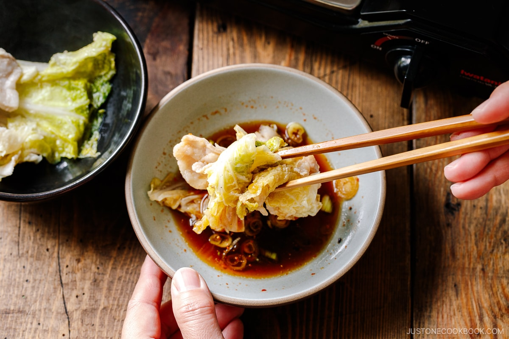

Mille-Feuille Nabe

Mille-Feuille Nabe is one of the most popular hot pot recipes to cook at home in Japan.
“A thousand layers“ of napa cabbage leaves and pork belly slices are beautifully packed and simmered in a warming dashi broth.
It comes together quickly for a weeknight dinner or hot pot party that you will treasure during the cold-weather months.
Information
- Prep Time: 15 minutes
- Cook Time: 15 minutes
- Total Time: 30 minutes
- Servings: 4
Ingredients
- 1 head napa cabbage (4 lbs, 1.8 kg)
- 1½ lb sliced pork belly (or slice your own pork belly;
do not use bacon, since it‘s too salty for this dish)
For the Broth
- 8-10 slices ginger (peeled and thinly sliced from a 1-inch, 2.5-cm knob)
- 5 cups dashi (Japanese soup stock)
- 2 Tbsp sake
- 1 Tbsp soy sauce
- ½ tsp Diamond Crystal kosher salt
For the Dipping Sauce
- 1 green onion/scallion
- ponzu
- shichimi togarashi(Japanese seven spice) (optional, for a spicy kick)
Instruction
- Before You Start: If you haven‘t made 5 cups dashi (Japanese soup stock) yet, here‘s a quick version using my favorite dashi packet.
First, add 2 dashi packets to 5 cups water in a saucepan. Start cooking over medium heat.
When it reaches a boil, reduce the heat to medium low and simmer for 2–3 minutes. Turn off the heat.
Remove the packets from the saucepan, shake them a few times to release more flavor, then discard them. The dashi is now ready to use.
- Gather all the ingredients
To Prepare the Ingredients
- To make the soup broth, combine 5 cups dashi (Japanese soup stock), 2 Tbsp sake, 1 Tbsp soy sauce, and ½ tsp Diamond Crystal kosher salt in a measuring cup or mixing bowl.
Don’t reduce the salt since the napa cabbage will release liquid during cooking and dilute the soup.
- Peel and thinly slice the ginger knob into 8-10 slices ginger and set it aside.
- Thinly cut 1 green onion/scallion. Put the green onion in a small serving bowl to add later to the dipping sauce.
- Cut 1 head napa cabbage lengthwise into quarters. I like to cut just the white bottom half of the napa cabbage head with a sharp knife,
then pull apart the leafy top half with my hands. By tearing the leaves naturally, you lose fewer leaves compared to slicing.
DO NOT cut off the core from the 4 wedges yet. The core keeps the leaves attached at the root end and makes layering the pork belly much easier.
- Carefully wash the leaves without detaching them from the core. Drain well. Don’t throw away any leaves that naturally come off while rinsing.
We’ll use them later on.
To Make the Layers
- Layer 1½ lb sliced pork belly into the napa cabbage wedges by placing one pork belly slice between each of the leaves.
If the pork belly is longer than the cabbage wedge, trim the pork with kitchen shears and layer it in other parts of the cabbage.
If you have extra pork belly, put an additional slice in the outer layers that have wide leaves.
- Once you‘ve tucked in the pork belly slices, carefully cut off the hard cabbage cores without disturbing the layers.
Cut each wedge into 4 pieces that are each about 2 to 2½ inches (5–6 cm) long,
keeping the layers of cabbage and pork neatly stacked as you slice.
To Pack the Pot
- Next, start packing the ingredients in a donabe or regular 10-inch pot (I used a 4.5 QT Le Creuset pot; if you‘re doubling the recipe, use two 10-inch pots or one larger pot).
Start from the edge of the pot and work your way toward the center. Turn the stacks on their side so the pink and green layers are visible.
Position the layers parallel to the pot‘s side so they eventually form concentric circles once the pot is packed.
- I usually place the thicker cabbage leaves near the edge of the pot and the tender leaves in the center. Make sure to pack the pot tightly as the layers will become loose during cooking.
- If you don’t have enough layers to pack the pot tightly, consider using a smaller pot or place other ingredients in the center.
Here, I stuffed the center with the napa cabbage leaves that came off when I cut and rinsed the cabbage.
You can also put enoki mushrooms or shimeji mushrooms in the center.
- If you have extra layers, hold them in a deep baking dish or a container with a tall rim.
You can add them to the pot later after you‘ve remove most of the cooked layers.
- Insert the thinly sliced ginger between the layers.
- Pour the soup broth into the pot with the cabbage and pork layers. If you are cooking at the table, bring the pot to the table.
Otherwise, you can start cooking on the stove.
To Set up the Table
- At each place setting, prepare a medium bowl and a small bowl for each person. To cook at the table, set it up a portable gas stove and place the pot on it.
For the dipping sauce, add ponzu, the chopped green onion/scallion, and optional shichimi togarashi (Japanese seven spice) to the small individual bowls.
To Cook and Serve
- Start cooking, covered, on medium-high heat. Once boiling, skim off the foam and fat on the surface using a fine-mesh skimmer.
Then, reduce the heat to medium low and cook covered until the napa cabbage is tender and the pork belly is cooked through, roughly 8–10 minutes.
When the Mille-Feuille Nabe is cooked through, serve it hot. Dip in the ponzu sauce and enjoy!
Back To Home Page